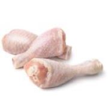
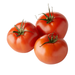
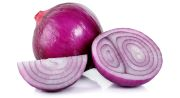
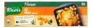
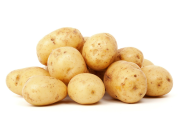
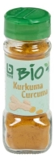
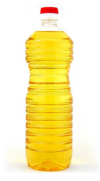

Waarom dit recept?
-De belangrijkste reden is omdat ik uit Colombia kom en ik wou je met een typisch gerecht kennis laten maken.
-Het is gemakkelijk en redelijk snel te maken en het is ook super lekker.
Recept voor 4 porties:
| Benodigheden | Beschrijving | |
|---|---|---|
|  | 8 kippenboutjes | De huid moet eraf zijn |
|  | 2 tomaatjes | Ze moeten zo rijp mogelijk zijn (zacht bij aanraken) |
|  | 1 kleine ui | Paars is de mooiste kleur, dus een paarse ui |
|  | ½ blok Knorr® kipbouillon | Het moet Knorr en finesse zijn, anders is het niet zo lekker |
|  | 5 aardappelen | Je kan meer toevoegen |
|  | 1 theelepel kurkuma | Je kan meer toevoegen voor een mooiere kleur |
|  | - | Gebruik plantaardige olie, geen olijfolie |
Bereiding
- Voorbereiding
- Snij de ui heel fijn.
- Indien de boutjes de huid hebben, verwijder dit met behulp van een mes
- Snij de tomatjes in 2 en rasp ze(zodat de huid eraf is)
- Schil de patatjes en snij ze in 2
- Tomatensaus maken (hogao)
- Fruit de uitjes totdat ze goudbruin worden en vervolgens voeg de tomaten en zout toe
- Voeg ½ glas water toe en laat ongeveer 10 minuten koken met middenhoog vuur
- Koken
- In een aparte kookpot, voeg 1 glas water toe, samen met de kurkuma, bouillon, zout, tomaten saus en aardappelen. Je kunt een halve aardappel raspen en toevoegen om de saus te verdikken, en breng aan de kook op hoogvuur voor 10 minuten.
- Als laatste stap voeg de boutjes en extra water toe en laat nog 20 minuten koken op middenhoog vuur
Tips
Serveren samen met rijst en avocado.
Als je ziet dat er nog te veel vloeistof is, of het is nog niet dik geworden, kan je het verder laten koken op laag vuur totdat je ziet dat het een mooie saus wordt.